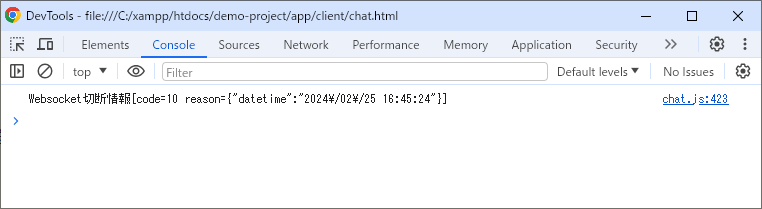
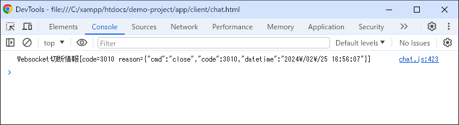
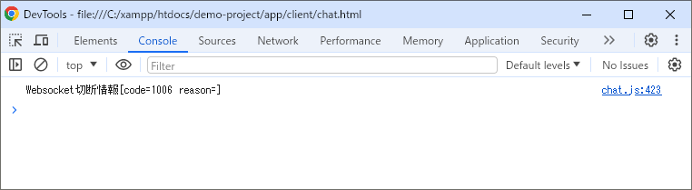
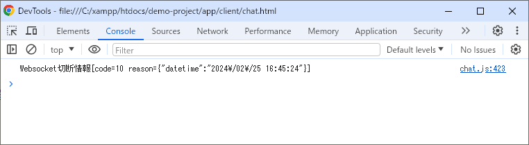
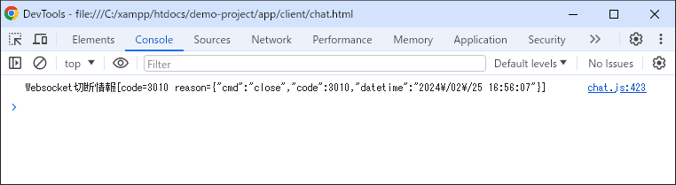
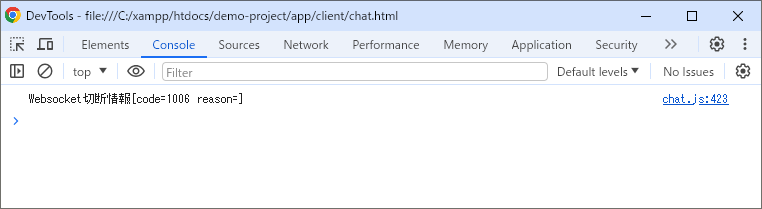
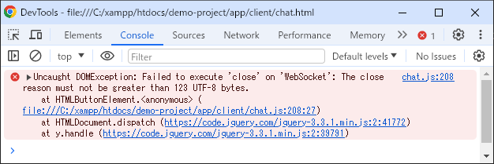

【切断フレームの検証】
はじめに
Websocketのプロトコルには切断フレームというものがあります。
RFC文書には以下のように書かれています。
この
※ブラウザはChromeを使っています。
RFC文書には以下のように書かれています。
状態コード, および オプションの close 事由 をパラメタに WebSocket closing ハンドシェイクを開始する ときは、 端点は § 5.5.1 の記述に従って，状態コードが コード にされ, close 事由が 事由 にされた， Close 制御フレームを送信しなければならない。 端点が Close 制御フレームを送信し, 受信したなら、 その端点は § 7.1.1 の定義に従って，WebSocket 接続を close するべきである。どうやら切断フレームを使った切断処理を
closingハンドシェイクと呼んでいるようです。この
closingハンドシェイクの正体が何なのかをRFC文書を確認しながらデモのソースを使って検証してみました。※ブラウザはChromeを使っています。
切断時の動作
以下は切断動作のデモです。まずは一番左のチャット履歴に注目してください。
周りのユーザーがそれぞれ異なる切断方法で終了しているのに対してチャット履歴の方にもそれに対応したコメントが表示されています。
切断時の履歴の種類は以下の通り。
ブラウザ：退室ボタンを押した時
これらの区別は切断フレームの内容を判断して表示しています。
切断フレームを正しく判断できれば、このような実装が可能になります。
周りのユーザーがそれぞれ異なる切断方法で終了しているのに対してチャット履歴の方にもそれに対応したコメントが表示されています。
切断時の履歴の種類は以下の通り。
ブラウザ：退室ボタンを押した時
2024/02/25 14:28:28 紅蓮の村人
退室しました
ブラウザ：×ボタンで閉じた時
2024/02/25 14:30:26 地獄の村人
切断されました
マインクラフト：×ボタンで閉じた時
2024/02/25 14:32:27 マイクラー
切断されました
サーバーからの強制切断
----/--/-- --:--:-- -----
切断されました
これらの区別は切断フレームの内容を判断して表示しています。
切断フレームを正しく判断できれば、このような実装が可能になります。
シーケンスパターン
RFC文書には以下のように書かれています。
また、以下のようにも書かれています。
これを踏まえた上で切断シーケンスのパターンを大きく分けると下記４パターンにまとまると思います。
①と②は切断フレームを使ったclosingハンドシェイクのパターンで、③と④はそれぞれ切断フレームを投げずにソケットを直接切断（瞬停）するパターンです。
WebSocket 接続の closing は，どちらの端点からも（同時の可能性も含めて）起動され得る。つまりサーバーサイド、クライアントサイドのどちらからでも切断要求を開始できると解釈できます。
また、以下のようにも書かれています。
WebSocket 接続は close 済みであり，かつ その端点で他に Close 制御フレームが受信されなかった場合 （下層のトランスポート層の接続が失われた場合などに生じ得る）、 close コードは 1006 であるものと見なされる。つまり切断フレームなしの瞬停があり得る事とその場合の
切断コード＝1006であると解釈できます。これを踏まえた上で切断シーケンスのパターンを大きく分けると下記４パターンにまとまると思います。
①と②は切断フレームを使ったclosingハンドシェイクのパターンで、③と④はそれぞれ切断フレームを投げずにソケットを直接切断（瞬停）するパターンです。
パターン別検証
サーバーサイドの方はスクラッチで組んでいれば特に問題ないと思いますが、ブラウザから切断フレームを送受信する時はどのようにすればいいのでしょうか。
切断シーケンスのパターンに当てはめて順を追ってみていきます。
これをシーケンス図にすると次のようになります。
そして実際のソースがこちら↓
app/client/chat.js
このJSONデータをサーバーが受け取ると
その後サーバーから切断フレームが送信されるので以下のソースで受信できます。
app/client/chat.js
相手側から切断フレームが投げられた上で切断検知した場合に
RFC文書の正に以下の部分です。

この例ではサーバーから
そして応用データには日時のJSON形式のデータが格納されています。
これは
※切断フレームの返信はブラウザが自動で行ってくれるので気にする必要はありません。
下記はサーバー側で受信した切断フレームのログです。切断コード（
確かにサーバーから送信した切断フレームがそのままブラウザから返されています。
切断フレームのログ
サーバーサイドではブラウザから返された切断フレームを受け取った直後に切断しています。
これはRFC文書に以下の記載があるからです。
つまり切断フレームを送信するのがサーバーからであろうがクライアントからであろうがサーバー側が先に切断するべきという事になります。
冒頭のデモ画面で言えば以下の履歴の部分に該当します。
ブラウザ：退室ボタンを押した時
app/client/chat.js
クライアントから直接切断要求を投げる場合は
（
このように
サーバー側で受け取った切断フレームがこちら↓
サーバーログ
そして先ほどと同じソースを使ってサーバーから受け取った切断フレームを確認すると以下の内容になっています。

冒頭のデモ画面で言えば以下の履歴の部分に該当します。
ブラウザ：退室ボタンを押した時
画面の見た目は①のパターンと同じですが、内部では動作検証のため「退室する」ボタンが押される度に
この場合も

これを見ると
冒頭のデモ画面で言えば以下の履歴の部分に該当します。
サーバーからの強制切断
実際にブラウザ画面を閉じるとサーバーサイドのログで以下の切断フレームを受け取っている事がわかります。
サーバーログ
これを見ると
マインクラフトの場合は何も送られて来ないので、わざわざ切断フレームを送信するような事はしていないようです。
冒頭のデモ画面で言えば以下の履歴の部分に該当します。
ブラウザ：×ボタンで閉じた時
切断シーケンスのパターンに当てはめて順を追ってみていきます。
①サーバーから切断フレームを送信
今回のデモではサーバーサイドから切断要求を送信するインタフェースを実装していないので、クライアントサイドからexit（退室）コマンド（「退室する」ボタン押下時）を送る事でサーバーサイドから切断フレームを送ってもらうようにしています。これをシーケンス図にすると次のようになります。
そして実際のソースがこちら↓
app/client/chat.js
// Websocket接続
websocket = new WebSocket($('input[name="uri"]').val());
.
.
.
// 退出コマンドを送信
let data =
{
'cmd': 'exit'
};
websocket.send(JSON.stringify(data));
exitというコマンド文字列をJSON形式にしてサーバーへ送信しています。このJSONデータをサーバーが受け取ると
exitコマンドが指示されたと解釈して処理を継続します。その後サーバーから切断フレームが送信されるので以下のソースで受信できます。
app/client/chat.js
websocket.onclose = function(event)
{
console.log(`Websocket切断情報[code=${event.code} reason=${event.reason}]`);
// 切断フレームを受信して切断検知した場合
if(event.wasClean)
{
let data = JSON.parse(event.reason);
}
// 切断フレームを受信せずに切断検知した場合
else
{
// 切断処理
}
}
相手側から切断フレームが投げられた上で切断検知した場合に
event.wasCleanを評価するとフラグが立ちます。RFC文書の正に以下の部分です。
WebSocket closing ハンドシェイクの完了後に TCP 接続が close された場合、 WebSocket 接続は clean に close されたとされる。そして以下のように
event.codeには切断コードが、event.reasonにはペイロード部の応用データが格納されている事がわかります。
この例ではサーバーから
切断コード=10が返されます。そして応用データには日時のJSON形式のデータが格納されています。
これは
退室しましたの表示を出す時に日時を含めるためで、このパターンで切断フレームを送信する時はこの形式で統一しています。※切断フレームの返信はブラウザが自動で行ってくれるので気にする必要はありません。
下記はサーバー側で受信した切断フレームのログです。切断コード（
codeキーの値）とペイロード部の応用データ（dataキーの値）が取得できているのがわかります。確かにサーバーから送信した切断フレームがそのままブラウザから返されています。
切断フレームのログ
2024-02-25 16:45:24 debug Array
(
[close code] => 10
[payload] => {"datetime":"2024\/02\/25 16:45:24"}
)
サーバーサイドではブラウザから返された切断フレームを受け取った直後に切断しています。
これはRFC文書に以下の記載があるからです。
下層の TCP 接続は、 ほとんどの通常の事例では，サーバが TIME_WAIT 状態を保持するようにするため、 クライアントではなく，まずサーバから close されるべきである。その理由はソケットがTIME_WAIT状態になると、ソケットリソースが解放されるまでにかなりの時間を要するためだと思われます。
つまり切断フレームを送信するのがサーバーからであろうがクライアントからであろうがサーバー側が先に切断するべきという事になります。
冒頭のデモ画面で言えば以下の履歴の部分に該当します。
ブラウザ：退室ボタンを押した時
2024/02/25 14:28:28 紅蓮の村人
退室しました
②クライアントから切断フレームを送信
実際のソースがこちら↓app/client/chat.js
// 切断要求を送信
let param =
{
'cmd': 'close',
'code': 3010,
'datetime': getDatetimeString()
};
websocket.close(3010, JSON.stringify(param));
クライアントから直接切断要求を投げる場合は
closeコマンドを切断コードと日時文字列を添えて送信してもらうようにしています。（
getDatetimeString関数は現在日時の文字列をY/m/d H:i:s形式で取得する処理です。）このように
websocket.closeメソッドの第一パラメータに切断コードを、第二パラメータにペイロード部の応用データを指定する事で任意の切断フレームをクライアント側から送信する事が可能です。サーバー側で受け取った切断フレームがこちら↓
サーバーログ
2024-02-25 16:56:07 debug Array
(
[close code] => 3010
[payload] => {"cmd":"close","code":3010,"datetime":"2024/02/25 16:56:07"}
)
そして先ほどと同じソースを使ってサーバーから受け取った切断フレームを確認すると以下の内容になっています。

冒頭のデモ画面で言えば以下の履歴の部分に該当します。
ブラウザ：退室ボタンを押した時
2024/02/25 14:28:28 紅蓮の村人
退室しました
画面の見た目は①のパターンと同じですが、内部では動作検証のため「退室する」ボタンが押される度に
exitコマンドが送信されるパターンとcloseコマンドが送信されるパターンで切断処理が切り替わるようにしています。③サーバー側の緊急切断
今回のデモではサーバーの管理画面を設けているわけではないので、物理サーバーをシャットダウンするかCtrl+C、あるいはkillコマンドで緊急停止した場合がこれに当たります。この場合も
websocket.oncloseを使ってイベントを拾う事ができますので、実行すると下記のログが表示されます。
これを見ると
切断コード=1006として返されている事がわかります。冒頭のデモ画面で言えば以下の履歴の部分に該当します。
サーバーからの強制切断
----/--/-- --:--:-- -----
切断されました
④クライアント側の緊急切断
デモのケースで言えばブラウザの×ボタンやマインクラフトの×ボタンで閉じた場合に当てはまります。実際にブラウザ画面を閉じるとサーバーサイドのログで以下の切断フレームを受け取っている事がわかります。
サーバーログ
2024-02-25 17:00:10 debug Array
(
[close code] => 1001
[payload] =>
)
これを見ると
切断コード=1001として送られている事がわかります。マインクラフトの場合は何も送られて来ないので、わざわざ切断フレームを送信するような事はしていないようです。
冒頭のデモ画面で言えば以下の履歴の部分に該当します。
ブラウザ：×ボタンで閉じた時
2024/02/25 14:30:26 地獄の村人
切断されました
マインクラフト：×ボタンで閉じた時
2024/02/25 14:32:27 マイクラー
切断されました
切断フレームの構造
これまでの内容をご覧頂いた通り、切断処理には色んなパターンがある事に気付いて頂けたのではないかと思います。
その上でもう一つ理解しておきたいのが切断フレームの構造です。
この部分も正しく理解しておかないと思わぬ不具合を生んでしまう事になります。
RFC文書には以下のように書かれています。
また、切断コードの部分は当然ながらネットワークバイトオーダーに従う必要があり、ビッグエンディアン（数値の桁の大きい方を先頭としたバイト順）として解釈する必要があります。
試しにクライアント側から切断コードも含めて126バイトのデータを送ってみます。
切断コードを含めた126バイトのデータで送信
ご覧のようにエラーになります。
その上でもう一つ理解しておきたいのが切断フレームの構造です。
この部分も正しく理解しておかないと思わぬ不具合を生んでしまう事になります。
拡張データ（切断コード）の仕様
ヘッダ部の値は固定なので特に問題はないと思いますがペイロード部の切断コードの部分には注意が必要です。RFC文書には以下のように書かれています。
本体が在る場合、 本体の最初の 2 バイトは，［ 状態コードを表現する，（ネットワークバイト順序で）2 バイトの無符号整数 ］でなければならない。普段はペイロード部を使ってサーバー／クライアント間でアプリケーション部分としてのデータのやり取りを行いますが、切断フレームの場合は拡張データとして切断コードの２バイト分を占有しますので、データを復元する時には最初の２バイト分を取り除かないといけません。
また、切断コードの部分は当然ながらネットワークバイトオーダーに従う必要があり、ビッグエンディアン（数値の桁の大きい方を先頭としたバイト順）として解釈する必要があります。
ペイロード長の仕様
RFC文書には以下のように書かれています。すべての制御フレームは ：ペイロード長さは 125 バイト以下でなければならない／断片化してはならない。制御フレーム（切断フレームを含む）のペイロード長は１２５バイト以下でなければならないという制約があるので実際に使えるのは
１２５－２（切断コード）＝１２３バイトになります。ユーザー名などのフリー入力ができるようなデータを載せてしまうと、あっという間にオーバーするので注意が必要です。試しにクライアント側から切断コードも含めて126バイトのデータを送ってみます。
切断コードを含めた126バイトのデータで送信
let data = '0123456789012345678901234567890123456789012345678901234567890123456789012345678901234567890123456789012345678901234567890123';
websocket.close(3010, data);
ご覧のようにエラーになります。
マインクラフトの場合
マインクラフトからWebsocketサーバーに接続する時には
というわけでブラウザ版と同じようにマインクラフトから
つまり上記①のパターンで
ところがサーバーからマインクラフトへ切断フレームを投げてみてもレスポンスが全く返ってきません。
仕方がないので切断フレームを投げた後にソケットを強制切断する事にしました。
これで切断はできたのですが、今度はマインクラフトから再接続する時に問題が発生しました。
マインクラフト側の動きとしては、サーバーから切断されても再接続するのが基本的な動きのようですが、その再接続すら働かない事があります。
しかも再接続が働いたとしても最初にopeningハンドシェイクが走るところまではいいのですが、その後すぐに切断されたり全く反応がなくなったりします。
そこで切断時のマインクラフトのおかしな挙動を調べた上で以下４つに分けてまとめました。
サーバーサイドから切断フレームを送信した時にはレスポンスを返さないのに再接続時に送られても意味がありませんので、これでは切断されてしまうのも当然です。
さらに調べてみると再接続時に送られた切断フレームの内容も間違っている事に気付きました。
RFCには以下のように記載されています。
ところがマインクラフトから受信した切断フレームは、サーバーから送信した応用データが空の状態ではあったものの、切断コードは入っていましたが異なるコードになっていました。
応用データの事はRFCで明記されていないので無視できるとしても切断コードが間違っていると何の要因で切断されたものなのかが判断できなくなるので困ります。
そしてさらに詳しく調べてみると、切断コードをバイト反転してみたらサーバーサイドから送信した切断コードと一致している事がわかりました。
つまりマインクラフトから送られた切断コードはネットワークバイトオーダーに準じていなかった事になります。
RFCにも以下のように書かれています。
その状態でサーバーサイドからデータを送信すると即座に切断されていました。
この状況を放置しているとサーバーリソースが圧迫されると同時に他の接続にも影響を及ぼしかねません。
つまり再接続しようとする時もあれば、しない時もあり、切断したつもりでしばらく放っておくといつの間にか繋がっていたりもします。
①マインクラフトからの切断フレームは無視する
②openingハンドシェイク直後にアライブチェックを行う
③ゼロレングスパケットを一定回以上連続で受信したらアライブチェックを行う
はっきり言ってマインクラフトの切断処理はかなり不安定なので、マインクラフト側の対策が入るまでは④の対策をして切断フレームは送らないようにしています。
一応
当然ながらxボタンで閉じた場合は再接続は走らないので、クライアントから強制切断されたとみなされます。
今のところ確実に切断できるのはこの方法しかないようです。
wsserverという専用のコマンドがあるのに対して、切断用のコマンドに関してはコマンドヘルプを見廻してみても見当たりません。というわけでブラウザ版と同じようにマインクラフトから
exitコマンドを投げて切断する事にしました。つまり上記①のパターンで
exitコマンドを受け取ったサーバーサイドから切断フレームを投げる形になります。ところがサーバーからマインクラフトへ切断フレームを投げてみてもレスポンスが全く返ってきません。
仕方がないので切断フレームを投げた後にソケットを強制切断する事にしました。
これで切断はできたのですが、今度はマインクラフトから再接続する時に問題が発生しました。
マインクラフト側の動きとしては、サーバーから切断されても再接続するのが基本的な動きのようですが、その再接続すら働かない事があります。
しかも再接続が働いたとしても最初にopeningハンドシェイクが走るところまではいいのですが、その後すぐに切断されたり全く反応がなくなったりします。
そこで切断時のマインクラフトのおかしな挙動を調べた上で以下４つに分けてまとめました。
①再接続後すぐに切断される事がある
再接続時の受信データを調べているとopeningハンドシェイクが終わった直後にマインクラフトから切断フレームが送られている事がわかりました。サーバーサイドから切断フレームを送信した時にはレスポンスを返さないのに再接続時に送られても意味がありませんので、これでは切断されてしまうのも当然です。
さらに調べてみると再接続時に送られた切断フレームの内容も間違っている事に気付きました。
RFCには以下のように記載されています。
Close フレームを受信した端点は、 それまでに Close フレームを送信していなかったならば，応答として Close フレームを送信しなければならない （概して，応答として Close フレームを送信する際は、 端点は受信した状態コードを返す） — 実用的な限り早く行うべきである。つまり切断フレームのレスポンス送信はなるべく早く行わなければならないのと、レスポンスを返す時は受信した切断コードと同じものを返さないといけない事になります。
ところがマインクラフトから受信した切断フレームは、サーバーから送信した応用データが空の状態ではあったものの、切断コードは入っていましたが異なるコードになっていました。
応用データの事はRFCで明記されていないので無視できるとしても切断コードが間違っていると何の要因で切断されたものなのかが判断できなくなるので困ります。
そしてさらに詳しく調べてみると、切断コードをバイト反転してみたらサーバーサイドから送信した切断コードと一致している事がわかりました。
つまりマインクラフトから送られた切断コードはネットワークバイトオーダーに準じていなかった事になります。
RFCにも以下のように書かれています。
本体が在る場合、 本体の最初の 2 バイトは，［ 状態°コードを表現する，（ネットワークバイト順序で）2 バイトの無符号整数 ］でなければならない。これは通信データを扱う上では致命的な不具合だと思いますが、この事を知ってしまうとWebsocketのヘッダ部もそうなっているのでは？と疑ってしまいたくなるので、この辺は早いうちに修正してもらいたいところです。
②再接続後反応がなくなる事がある
この症状が出た時はマインクラフト側から空パケットが延々と送られている事がわかりました。その状態でサーバーサイドからデータを送信すると即座に切断されていました。
この状況を放置しているとサーバーリソースが圧迫されると同時に他の接続にも影響を及ぼしかねません。
③再接続動作が発動しない事がある
この挙動についてはよくわかりませんが、この状態でwsserverコマンドを使って再接続しようとすると上記の①や②と同じ現象が起こっている事がわかりましたので単純に再接続動作に失敗しているのだと思われます。④サーバーから切断フレーム送らなければ．．．
そう思って試したところ、①②の挙動はなくなりましたが③の動作は再現する事があります。つまり再接続しようとする時もあれば、しない時もあり、切断したつもりでしばらく放っておくといつの間にか繋がっていたりもします。
今回の対策
上記の①から③までの事を踏まえて、マインクラフトからの接続時には以下の対応を入れるようにしています。①マインクラフトからの切断フレームは無視する
②openingハンドシェイク直後にアライブチェックを行う
③ゼロレングスパケットを一定回以上連続で受信したらアライブチェックを行う
はっきり言ってマインクラフトの切断処理はかなり不安定なので、マインクラフト側の対策が入るまでは④の対策をして切断フレームは送らないようにしています。
一応
$exitコマンドで切断できるようにはしていますが、これらの対策をとってもいつの間にか再接続されている現象は発生しますので注意が必要です。当然ながらxボタンで閉じた場合は再接続は走らないので、クライアントから強制切断されたとみなされます。
今のところ確実に切断できるのはこの方法しかないようです。
おわりに
上記を踏まえてブラウザ版とマインクラフト版を比較してみると以下のようになります。
これを見る限りでは、まだマインクラフト側では完全に対応しているわけではないようです。
これを見る限りでは、まだマインクラフト側では完全に対応しているわけではないようです。